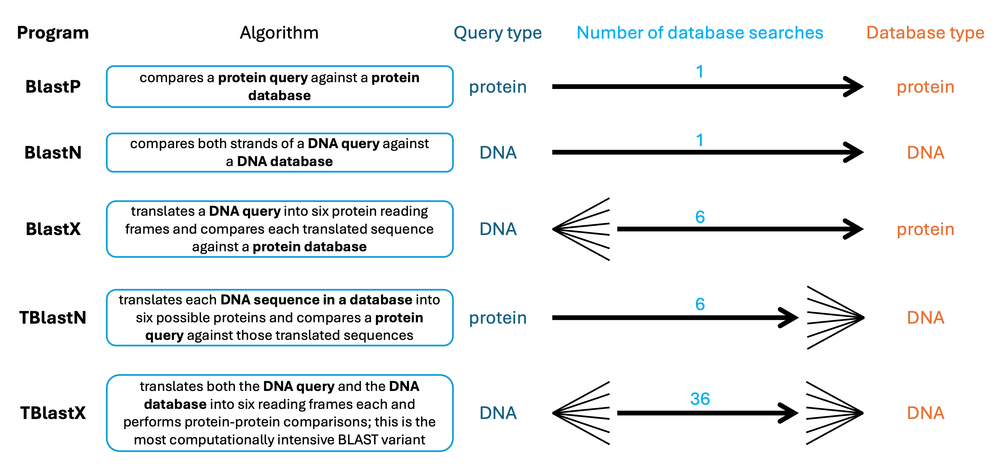

19 Lab05: BLAST on the Command Line
For this lab, you will learn to use BLAST (Basic Local Alignment Search Tool) on the command line to identify sequence homology and annotate unknown sequences. While web-based BLAST is convenient for single queries, command-line BLAST is essential for analyzing large datasets, automating repetitive tasks, and integrating BLAST into bioinformatics pipelines. This lab will walk you through creating BLAST databases, running searches, and parsing results—skills that are fundamental to genome annotation, comparative genomics, and evolutionary studies.
19.1 Background: Why Command Line BLAST?
BLAST is the most widely used bioinformatics tool, with the original publication cited nearly 80,000 times1. While the web interface at NCBI is user-friendly, command-line BLAST2 offers several advantages:
- Batch processing: Query thousands of sequences automatically
- Custom databases: Search against your own sequences, not just NCBI’s databases
- Reproducibility: Scripts can be shared and rerun exactly
- Integration: Combine BLAST with other tools in analysis pipelines
- Control: Fine-tune parameters and output formats for downstream analysis
In this lab, you’ll work with a realistic scenario: you’ve assembled transcripts from a newly sequenced plant genome and need to annotate them using the well-characterized Arabidopsis thaliana genome. Your goal is to determine which transcripts correspond to mitochondrial, chloroplast, or nuclear genes.
19.2 Setup
Login to your ASC account and make a folder for Lab 5 called
Lab5.Copy all files from the shared folder
~/bioinf_shared/Lab5_BLAST_CLinto yourLab5directory. Important: Copy these files, do not move them!List the files in your directory. You should see:
test.fasta(your query sequences - the unknown transcripts)ATcp.fasta(Arabidopsis chloroplast genome)ATmt.fasta(Arabidopsis mitochondrial genome)ATchrV.fasta(Arabidopsis chromosome V - a sample nuclear chromosome)Example_script.sh(template for your commands)
Open
Example_script.shin your preferred text editor. This script will be your working file throughout the lab. You’ll add commands to it as you progress, building a complete, reusable BLAST workflow by the end.Replace your username at the top:
DIR="/home/aubclsfXXXX/Lab5" # Replace with your username
19.3 Step 1: Examine Your Query Sequences
Before running BLAST, you should understand your input data.
Use
lessto view thetest.fastafile. Recall that FASTA format consists of a header line starting with>followed by the sequence on subsequent lines.Count how many sequences are in
test.fasta.Hint: The
>symbol marks each new sequence header. Usegrepwith the-cflag to count matching lines. Checkman grepif needed.Record this number—you’ll need it later to determine how many sequences had no BLAST hits.
19.4 Step 2: Create BLAST Databases
When you use BLAST on the NCBI website, you’re searching against pre-built databases. To use BLAST on the command line with custom sequences, you must first build your own databases.
Load the BLAST module to access the BLAST+ tools:
module load blast+/2.15.0Examine the database creation tool:
makeblastdb -helpLook through the documentation to identify the required parameters. Key options include:
-in: Input FASTA file-dbtype: Type of sequences (nuclfor nucleotides,protfor proteins)-out: Output database name (optional; defaults to input filename)
Documentation on this module can be found on the ASC Documentation Site. Additional documentation on this tool can be found at NCBI.
Determine the sequence type in your FASTA files. Open one of the
AT*.fastafiles withless. Are these nucleotide or protein sequences?Create a BLAST database for each of the three Arabidopsis sequence files (
ATcp.fasta,ATmt.fasta, andATchrV.fasta). Do not create a database fromtest.fasta—this will be your query.For example, for the chloroplast:
makeblastdb -in ATcp.fasta -dbtype nuclTip: To make your script more flexible, use variables as shown in the example script. For instance:
cp=ATcp.fasta makeblastdb -in $cp -dbtype nuclAdd these three
makeblastdbcommands to yourExample_script.shfile.Submit your script to the ASC queue with these parameters:
- Number of CPUs = 1
- RAM/Memory = 50MB
- Queue = class
- Time = 01:00:00 (1 hour)
After the job completes, check the standard output file (ending in
.ofollowed by the job number) for errors. Then list your directory contents.You should now see multiple new files for each database (with extensions like
.nhr,.nin,.nsq, etc.). These are the indexed database files that BLAST will use for rapid searching. Count how many new files were created per input FASTA file.Check your job efficiency using
jobinfo -j JOBNUMBER. Note the memory and CPU usage—this information helps you optimize future jobs. What was your memory efficiency? CPU efficiency?
19.5 Step 3: Run Your First BLAST Search
Now you’ll compare your unknown transcripts test.fasta against each of the three databases you created. First, examine Figure 19.1 to determine which program to use within BLAST.

There are five major algorithms within BLAST. The suffixes in the names are: P = protein, N = nucleotide, X = dynamically translated DNA, and T = translating database sequences. In making your database, you already know your input sequences are nucleotides. Example the input file test.fasta to determine which of the five programs you will use when running your BLAST search.
Since both your query and database sequences are nucleotides, you’ll use the
blastnprogram. Review the available options:blastn -helpThe essential parameters are:
-query: Your input FASTA file-db: The database to search against-out: Output file name
Run BLAST to compare
test.fastaagainst the chloroplast database. For example:blastn -query test.fasta -db ATcp.fasta -out test_vs_cp.blastn_outUse a descriptive output filename that indicates the query and database (e.g.,
test_vs_cp.blastn_outfor test query versus chloroplast database).Repeat for the other two databases (mitochondrial and chromosome V). Add all three BLAST commands to your script.
Submit your updated script to the queue:
- Number of CPUs = 1
- RAM/Memory = 100MB
- Queue = class
- Time = 01:00:00
Tip: After successfully creating the blast databases, comment out the
makeblastdbcommands (add#at the start of each line) so they don’t rerun unnecessarily as we continue to add to this script.Once the job completes, examine one of the output files using
less. This is BLAST’s default “pairwise” format, similar to what you see on the NCBI website. While human-readable, it’s difficult to parse computationally.
19.6 Step 4: Optimize Output Format for Parsing
The default BLAST output is verbose and hard to parse with command-line tools. BLAST offers alternative formats that are more suitable for automated analysis.
Review the
-outfmtoption in theblastn -helpoutput. You’ll see numbered format options (0-18). Formats 6 and 7 are tabular and particularly useful for parsing.Rerun one of your BLAST searches using
-outfmt 6:blastn -query test.fasta -db ATcp.fasta -outfmt 6 -out test_vs_cp.tabExamine the output with
less. Format 6 produces tab-delimited columns:- Column 1: Query sequence ID
- Column 2: Subject (database) sequence ID
- Column 3: Percent identity
- Column 4: Alignment length
- Column 5: Number of mismatches
- Columns 6-12: Additional alignment statistics including E-value
Compare format 6 to format 7 (which includes column headers). Which do you prefer? As a class, decide on one format to use consistently.
Update your script to use your chosen output format for all three BLAST searches. Update the queue parameters based on your previous job’s runtime and memory usage (check with
jobinfo):- Number of CPUs = 1
- RAM/Memory = ? (what did you actually use last time?)
- Queue = class
- Time = ? (how long did it actually take?)
Comment out the previous BLAST commands and add the new versions. Submit to the queue.
19.7 Step 5: Understanding Database Size Effects on E-values
The E-value (expect value) represents the number of hits you’d expect to see by chance in a database of this size. Larger databases generally produce larger E-values for the same match.
To avoid duplicating large files, I have pre-downloaded Chr1 of the Arabidopsis genome. You’ll create a symbolic link to the database folder (make sure to replace your username as you did during setup):
ln -s /home/aubclsfXXXX/bioinf_shared/Arabidopsis_thaliana/CHR_IA symbolic link acts like a shortcut—the files appear in your directory but remain stored in the original location.
BLAST allows you to search multiple databases simultaneously by listing them in quotes:
blastn -db "ATcp.fasta ATchrV.fasta CHR_I/NC_003070.fasta ATmt.fasta" \ -query test.fasta -outfmt 6 -out combined_search.txtThis searches all four databases (chloroplast, chrV, chrI, and mitochondrial) in one run.
Note: If you named your BLAST databases something different than the default names, then you will need to edit this to match your database naming conventions here.
Add this command to your script, comment out previous lines, and submit to the queue with updated parameters.
After completion, compare the E-values for a specific hit:
- Find a transcript that matched the chloroplast in your earlier single-database search
- Look up the same transcript in your combined search output
- How did the E-value change? Why? Consider: The combined database is much larger than the chloroplast alone.
19.8 Step 6: Parse BLAST Output to Count Hits Per Database
Now you’ll use command-line text processing tools to extract meaningful summaries from your BLAST results. The goal is to count how many of your query transcripts match each database (mitochondrial, chloroplast, or nuclear chromosomes). You will be making a long one-liner with multiple piped steps that you will build incrementally below.
Your BLAST output columns 1 and 2 contain the query name and database hit. Extract just these columns using
awk:blastn -db "ATcp.fasta ATchrV.fasta CHR_I/NC_003070.fasta ATmt.fasta" \ -query test.fasta -outfmt 6 | awk '{print $1,$2}'The
|(pipe) sends BLAST output directly toawkwithout creating an intermediate file. In the next several steps, add each command via pipe to this command line argument. In the end, you will redirect the output to a file.Keep in mind that if you run the command above by itself, the output will be LARGE! So if you want to test each step of your piped one-liner, simplify the output by piping it to
headperiodically. But beware! Do not accidentally leave a| head |in the middle of your one-liner which will effectively remove a vast majority of your output hits!Each query might have multiple hits to the same database sequence. Remove duplicates with another pipe to
sortand thenuniqto yield unique query-database pairs (one line per transcript-database match).
Hint: Do not forget to use the man page when needed to remind yourself how to use these tools.
Now focus only on which databases were hit by adding a pipe to awk to isolate only column 2. This will remove the query names.
Next, count how many times each database appears by piping the output to
uniq -c(which requires sorted input).Sort the counts numerically and save to a file called
RawCounts.txt.Examine
RawCounts.txt. You should see counts for each database. Did you get more hits to chromosome I (the full chromosome) or to chromosome V (partial)? Why might that be?Both chrV and chrI should be “NT”, but since we used a symbolic link for chrI, it shows up differently in our output. Use
sedto convert chrI hits to NT so we can combine hits for these two chromosomes.Add this complete one-liner to your script. This is a powerful example of piping multiple tools together—a common pattern in bioinformatics.
19.9 Step 7: Identify Sequences with No BLAST Hits
Some of your query transcripts may not match any database, suggesting they could be novel genes, misassembled sequences, or contamination.
Sequences with no BLAST hits won’t appear in your output file at all. Calculate the number:
- Total sequences in
test.fasta(you counted this in Step 1) - Minus: Number of sequences with at least one hit
- Total sequences in
To count sequences with hits, extract unique query IDs from your BLAST output:
awk '{print $1}' combined_search.txt | sort | uniq | wc -lCalculate:
(total sequences) - (sequences with hits) = sequences with no hitsAlternatively, if you want to know which specific sequences had no hits, you could:
- Extract all sequence IDs from
test.fasta:grep ">" test.fasta > all_queries.txt - Extract hit IDs from BLAST output:
awk '{print $1}' combined_search.txt | sort | uniq > hit_queries.txt - Find the difference:
comm -23 all_queries.txt hit_queries.txt
- Extract all sequence IDs from
Add the count of sequences with no hits to the bottom of your
RawCounts.txtfile usingecho:echo "No hits: [your count]" >> RawCounts.txt
19.10 Step 8: Finalize Your Script
Review your
Example_script.sh. It should now contain:- Commands to create three BLAST databases
- Commands to run BLAST searches (with appropriate output formatting)
- A one-liner to parse results and count hits per database
- Calculation of sequences with no hits
Add comments throughout your script to explain what each section does.
Test that your script runs successfully from start to finish. You can do this by:
- Removing all output files
- Resubmitting the script (with all commands uncommented)
- Verifying all expected outputs are generated
This script is now a reusable tool. With minor modifications, you could use it to annotate sequences from any organism against any reference genome.
19.11 Reflection Questions
Now that you’ve completed the lab, reflect on the following:
Command-line advantages: What are some specific scenarios where command-line BLAST would be preferable to web-based BLAST? Consider factors like:
- Number of sequences
- Database selection
- Reproducibility
- Integration with other tools
Nucleotide vs. protein BLAST: For identifying orthologs across distantly related species, is it better to use nucleotide sequences (blastn) or protein sequences (blastp/blastx)? Why? Hint: Consider how DNA vs. protein sequences evolve over time.
Novel sequences: Based on your
RawCounts.txtresults:- How many transcripts matched the chloroplast genome?
- How many matched the mitochondrial genome?
- How many matched nuclear chromosomes?
- How many had no hits in any database?
For the sequences with no hits, what are possible biological explanations? What would you do next to characterize these sequences?
E-value interpretation: You observed how database size affects E-values. If you’re comparing BLAST results from different studies that used different reference databases, why is it important to consider database size? How might this affect your interpretation of “significant” hits?
Applications: Beyond annotation, describe two other biological questions or research applications where command-line BLAST would be useful. Be specific about what you’d search and why.
19.12 Deliverables
Upload the following to Canvas:
- Your completed
Example_script.shfile (with comments explaining each section) - Your
RawCounts.txtfile - Answers to the five reflection questions above (in a Word document or PDF)
19.13 Acknowledgement
This lab assignment has been adapted from an activity initially composed by Dr. Nathan Hall from Auburn University. It has been further modified through multiple cohorts of students and more recently with the assistance of AI.
19.14 Additional Resources
Extending Your BLAST Skills:
Primer design: BLAST can verify primer specificity. For large-scale primer design (>5 loci), automating BLAST checks saves time. Python’s primer3 wrapper can be integrated with command-line BLAST.
Ortholog discovery: SeqAnswers Thread discusses automating BLAST for ortholog identification across multiple genomes—useful for comparative genomics projects.
Alternative alignment tools:
Visualization in R: The genoPlotR package creates publication-quality figures from BLAST and Mauve outputs, useful for comparing genome organization.
BLAST+ Documentation: Comprehensive guide to all BLAST+ tools and parameters: NCBI BLAST+ Command Line Applications User Manual